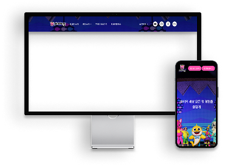
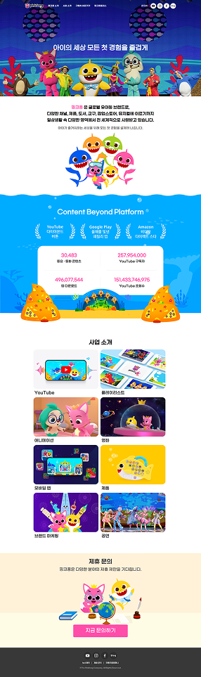

웹 표준과 접근성 준수는 웹 개발의 기본이자 핵심 요소입니다. 모든 사용자가 불편 없이 웹에 접근할 수 있도록 보장하기 때문입니다. 저는 공공기관 프로젝트를 수행하며 시맨틱 HTML과 반응형 디자인을 적용해 안정적인 사용자 경험을 제공했습니다. 이를 통해 기본에 충실한 사용자 중심 웹 개발 역량을 갖추게 되었습니다.
팀 프로젝트에서 구조적인 협업 능력을 발휘한 경험이 있습니다. 작업 효율은 명확한 파일 구조와 역할 정리가 핵심임을 직접 느꼈고, 노티드 도넛 프로젝트에서는 팀장으로써 SCSS 모듈화를 통해 스타일 관리의 혼선을 줄였으며, AOMG 프로젝트에서는 폴더 구조 정리를 통해 팀 간 통합 작업을 원활하게 했습니다. 이를 통해 협업 환경을 정돈하고, 팀 전체의 개발 흐름을 개선하는 역량을 키웠습니다.
React.js를 활용해 컴포넌트 단위로 재사용성과 유지보수성을 고려한 UI를 설계하고 구현한 경험이 있습니다. 상태 관리 훅(useState, useEffect)을 적극 사용하며 동적인 사용자 인터페이스를 구현했고, React Router로 화면 간 원활한 라우팅을 적용했습니다. 또한 사용자 경험을 최우선으로 하는 모던 프론트엔드 개발 방식을 익히며, 유지보수성과 사용자 중심 UI 구현에 강점을 가진 개발자로 성장하고 있습니다.


기간6월 17일 - 6월 19일 (3일 소요)
역할팀장
담당 섹션메인페이지 : side, main-slide, intro, header
서브페이지 : 로그인, 이벤트, 브랜드
사용 기술HTML,SCSS,JavaScript
"header 레이아웃, 난관을 극복하고 완벽히 구현했습니다."
문제
메인 페이지의 헤더(Header) 구현에서 예상치 못한 기술적 어려움에 직면했습니다. 헤더가 열렸을 때 화면 상단에 고정되고 전체 화면을 가득 채워야 했지만, 스크롤이 발생하거나 헤더의 높이 값 때문에 상단 고정이 제대로 되지 않는 문제가 발생했습니다. 다른 요소의 position 값과의 충돌이 원인이었으며, 이로 인해 디버깅에 어려움을 겪었습니다.
해결 방법
이러한 문제를 해결하기 위해, 먼저 헤더와 관련된 CSS position 속성 및 z-index 값들을 면밀히 검토했습니다. 다른 요소들과의 겹침 및 정렬 문제를 파악하고자 크롬 개발자 도구를 활용하여 각 요소의 box model과 computed style을 분석했습니다. 최종적으로, 헤더와 주변 요소들의 HTML 구조를 보다 체계적으로 재정립하고, 충돌하는 position 값을 조정했습니다. 또한, height: 100%과 같은 유동적인 단위를 적용하여 헤더가 의도한 대로 동작하도록 해결했습니다. 이 과정에서 각 요소의 상위/하위 관계 및 스타일 상속을 다시 한번 이해하는 계기가 되었습니다.
처음 팀장을 맡으며 스스로에게 여유와 확신이 부족해 부담감과 책임감의 무게를 크게 느꼈지만, 이 경험은 '소통이 빛을 발한다'는 것을 실감하게 해주었습니다. 이전 프로젝트에서 겪었던 어려움들을 개선하며 팀원들과 시너지를 내는 데 집중했습니다. 단순히 기능을 구현하는 것을 넘어, 유지보수하기 좋은 코드 구조를 제시하고, 팀원들이 공통의 목표를 향해 나아갈 수 있도록 리드했습니다. 특히 팀원들의 의견을 경청하고 각자의 장점을 살리도록 유도하며, 효율적인 방향으로 프로젝트를 이끌 수 있었던 것이 큰 보람이었습니다. 이 과정을 통해 팀원을 이해하고 이끄는 리더십의 자세를 배울 수 있었고, 프로젝트를 즐겁고 수월하게 마무리할 수 있었습니다.

기간5월 14일 - 6월 11일 (주말제외, 총 18일 소요)
역할팀원
담당 섹션메인페이지 : header, artist, news
서브페이지 : schedule, news
사용 기술HTML,scss,javascript,gsap,aos
"첫 협업, 의견 충돌을 극복하고 함께 성장했습니다."
문제
이 프로젝트는 저에게 첫 팀 프로젝트였습니다. 팀원 모두 협업 경험이 부족한 상태에서 시작하다 보니, 프로젝트 초반부터 각자 원하는 디자인 방향이 달라 전체적인 통일성 부족 문제가 발생했습니다. 예를 들어, 어떤 팀원은 강렬한 색감과 애니메이션을 선호했지만, 다른 팀원은 미니멀하고 정적인 디자인을 원했습니다. 또한, 각자 맡은 부분을 구현할 때 사전에 스타일 가이드를 정립하지 않아 비효율적인 코드 구조가 나타났습니다. 메인 제목 같은 동일한 H1 태그임에도 팀원마다 다른 폰트 크기나 여백 값을 적용하는 등의 문제가 있었습니다.
해결 방법
이러한 문제를 해결하기 위해, 준비 단계에 찾은 레퍼런스를 보며 프로젝트의 명확한 '목적성'을 함께 정의했습니다. AOMG의 힙합 감성을 강조하면서도 사용자 친화적인 인터페이스를 제공하는 것과 같이 목표를 구체화했습니다. 그 목적에 부합하는 디자인을 그려나가며 팀원들의 의견을 하나로 모았습니다. 코드 구현 전에는 스타일 가이드를 명확히 정립했습니다. 모든 제목 태그(H1, H2 등)의 폰트 크기, 색상, 여백을 통일하고, 주요 색상과 폰트 패밀리는 변수로 지정하여 사용하기로 약속했습니다. 이후 각자 코드를 리뷰하며 가이드라인 준수 여부를 확인하고 수정하는 과정을 거쳤습니다. 이러한 해결 과정은 사용자에게 일관되고 직관적인 인터페이스를 제공하여 브랜드 정체성을 강화했습니다. 생산성 향상과 개발 시간 단축에 기여했으며, 유지보수 및 확장성이 용이해졌습니다. 또한, 팀원 간 소통 능력과 신뢰가 향상되어 팀 시너지를 극대화할 수 있었습니다.

기간4월 28일 - 4월 30일 (3일 소요)
개선 부분메인페이지 전체
서브페이지 : 로그인, 공지사항
사용 기술 HTML, css, javascript
"반응형은 외계어 같았습니다"
문제
PC 화면에서는 문제없던 레이아웃이 모바일로 줄이면 깨지거나 요소가 겹치는 문제에 직면했습니다. 특히 고정된 높이 값 설정과 position 속성 사용으로 디버깅에 어려움을 겪었으며, 폰트 크기를 수동으로 일일이 조정하는 비효율성도 컸습니다.
해결 방법
이러한 문제를 해결하고자 flexbox를 적극 활용하고, 폰트 및 요소 크기에는 %, rem 같은 상대 단위를 적용하여 유연한 레이아웃을 구축했습니다. 크롬 개발자 도구로 실시간 확인하며 디버깅 시간을 단축했고, 이 프로젝트를 통해 반응형 웹의 중요성을 체감하며 rem 단위와 CSS 변수(Custom Properties) 사용의 필요성을 깨달았습니다. 이후 프로젝트부터는 rem을 기본 폰트 계산 단위로 삼고 CSS 변수를 활용하여 더욱 효율적이고 확장성 있는 반응형 디자인을 구현하는 역량을 길렀습니다.

기간5월 7일 - 5월 9일 (2일 소요)
개선 부분메인페이지 전체
사용 기술HTML, css, javascript
"혼돈의 시간 관리, 우선순위가 길을 알려주었습니다"
문제
개인 프로젝트였지만, ‘할 수 있다’ 라는 의욕과 생각이 앞서 비현실적인 기한을 정했고 결국 새벽까지 몰입하여 작업하였습니다. 짧은 시간 안에 많은 기능을 구현하려다 보니, 예상치 못한 문제에 직면했을 때 시간 지체가 발생했습니다. 이는 전체적인 진행 속도에 영향을 주었고, 계획했던 만큼 많은 페이지나 기능을 구현하지 못하는 원인이 되었습니다. 다음으로 어떤 기능을 구현할지 우선순위를 정하고 효율적인 시간 분배를 하는 것이 가장 어려운 숙제였고, 결국 급하게 마무리하며 아쉬움이 남게되었습니다.
해결 방법
이러한 혼란을 극복하고자 작업 목록을 정리했습니다. 각 기능에 대략적인 예상 시간을 정하고, 가장 중요하고 핵심적인 기능부터 우선적으로 구현했습니다. 특히 한 문제에 오래 매달리지 않도록 ‘타임박싱’ 기법을 활용했습니다. 막히는 부분이 있으면 잠시 멈추고 다음 작업으로 넘어가는 유연성을 발휘했습니다. 덕분에 전체 진행 속도도 유지할 수 있었고, 오히려 잠시 미뤄두었던 문제에 대한 해결책이 문득 떠오르는 경험도 할 수 있었습니다. 이번 경험을 통해 현식적인 목표 설정과 체계적인 시간 관리의 중요성을 깨달았습니다. 다음 프로젝트부턴 작업을 더 잘게 쪼개어 진척도를 명확히 파악하고 시간관리 연습을 통해 효율적인 프로젝트 관리 능력을 키우고 싶습니다.
기간7월 8일 - 7월 21일 (주말제외, 총 10일 소요)
개선 부분공식 웹 사이트의 메인페이지 및 스토어사이트 전체
사용 기술React.js
"효과적인 레이아웃 관리 전략"
문제
React SPA에서 핑크퐁 메인 홈페이지와 스토어 홈페이지 간의 이질적인 레이아웃(헤더/푸터)을 효율적으로 관리하고 렌더링하는 것이 주요 문제로 대두되었습니다. 초기에는 App.js 내에서 useLocation 훅을 활용한 조건부 렌더링을 고려했습니다. 그러나 이 방식은 애플리케이션 규모가 커질수록 App.js의 복잡도를 급증시키고, 코드 가독성 및 유지보수성을 저해하며, 단일 책임 원칙(SRP)에 위배되는 아키텍처적 한계를 명확히 인지했습니다. 이는 장기적인 프로젝트의 확장성과 협업 효율성 측면에서 큰 장애물이 될 것이라 판단했습니다.
해결 방법
이러한 한계를 극복하고 구조적이며 확장 가능한 아키텍처를 구축하기 위해 레이아웃 컴포넌트 패턴을 채택했습니다. src/layouts 디렉토리에 MainLayout.js와 StoreLayout.js를 각각 정의하여, 각 도메인(메인/스토어)의 고유한 헤더, 푸터 및 공통 구조를 효과적으로 캡슐화했습니다. App.js에서는 더 이상 조건부 렌더링 로직을 직접 수행하지 않고, 각 라우트의 페이지 컴포넌트를 해당 도메인에 맞는 레이아웃 컴포넌트로 감싸는 방식으로 구조를 단순화했습니다. 이는 도메인별 레이아웃의 명확한 분리를 가능하게 했습니다.
이러한 레이아웃 컴포넌트 기반의 접근 방식은 App.js의 책임 과중을 해소하고, 각 컴포넌트의 책임 영역을 명확히 분리하여 가독성과 유지보수성을 획기적으로 향상시켰습니다. 또한, 유연한 레이아웃 관리를 통해 애플리케이션의 확장성을 확보할 수 있었습니다. 이 경험을 통해 단순한 기능 구현을 넘어, 설계 원칙(예: SRP)을 준수하는 체계적인 아키텍처 설계가 프로젝트의 장기적인 건전성과 지속 가능성에 필수적임을 깊이 체감했습니다. 이는 제가 향후 프로젝트를 설계하고 개발하는 데 있어 중요한 기반 지식이 될 것입니다.